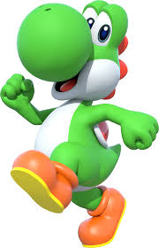

Qui est yoshi ?

Yoshi est un personnage fictif de jeu vidéo créé par le japonais Shigefumi Hino. Il apparaît dans les jeux vidéo édités par Nintendo, d'abord dans la série Super Mario où il accompagne Mario et Luigi, puis dans sa propre série avec, entre autres, Super Mario World 2: Yoshi's Island. Il fait également des apparitions dans plusieurs séries spin-off telles que Mario Party, Mario Kart et Super Smash Bros.. Initialement, Yoshi se présente sous la forme d'un reptile. Par extension, son nom désigne aussi une espèce animale qui peut avoir d'autres couleurs. Il peut avoir une teinte bleu clair ou foncé, orange, verte, jaune, rose, violette, brune, noire, blanche ou rouge, mais la plus connue reste la verte.